Beginning
So if you feel like the tutorial on this website is a bit confusing.. then feel free to watch the video instead
So, this took me a while to create just because I completely forgot about it. Anyways, I'll be talking a bit before getting to the tutorial.
I have personally only tested this on an M4 Mac. I genuinely have no idea if Intel macs work with this...
Also, make sure you have DELTARUNE on Steam!
Requirements
Now, for this you will need these software:
- Deltarune on Steam (obviously)
- Porting Kit
- DeltaPatcher
- Optional: Crossover (You can use this method if Porting Kit doesn't work for any reasons!)
Step 01: Setting up Porting Kit
Because almost all DELTARUNE mods are made for the Windows version, we need to get the Windows game files (data.win) first. We'll be using Porting Kit to install the Windows version of Steam so we can grab those files!
You will have to make sure to download Porting Kit from HERE or the link below:
https://www.portingkit.com/download
Press Download PK 7 (macOS 12.0+)
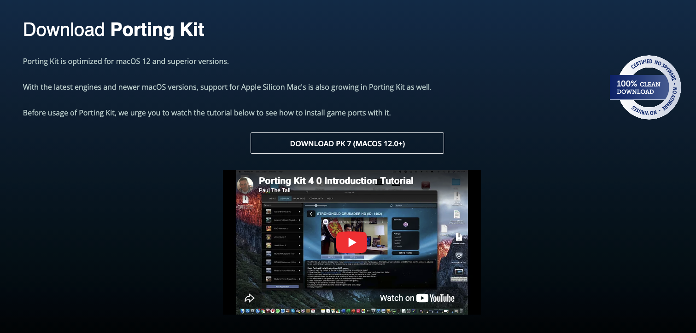
After pressing the Download button, you will get redirected to itch.io. Scroll down and press the red "Download Now" button. After, press on the underlined "No thanks, just take me to the downloads" (if you want to you can leave a nice donation for the devs!)
Depending on the device you have, if you have an M1 & ABOVE select the "Porting.Kit-7.0.2-Apple Silicon.dmg" file. If you have an INTEL based Mac device, select the "Porting.Kit-7.0.2-Intel.dmg" file.
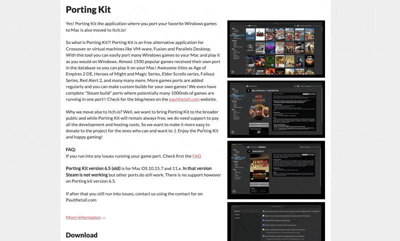
After you have DOWNLOADED the file, it should be sent to your Downloads folder. Double click the DMG file. A Window will appear showing Porting Kit and your Applications folder. Drag Porting Kit into your Applications folder. Then, close out of the window.
Within Finder and Locations on the left side, you might want to close the folder. Just right click and press Eject or press the eject icon.
It should now be INSTALLED on your device. Hold COMMAND + SPACE and type Porting Kit or press COMMAND + 1 after the first command to find it.
Porting Kit will be open on 'News' under 'Misc'. Press on 'All Games' (under 'Games') and Press the second Thumbnail (which has the Steam Icon). It's labelled 'Steambuild 32/64bit DXVK'. After Pressing it, tap on 'INSTALL'.
Note:
There are other Steambuild wrappers you can download, such as DXMT and Metal versions. Though, other two versions are only supported on M1+ devices, i would recommend using DXVK .
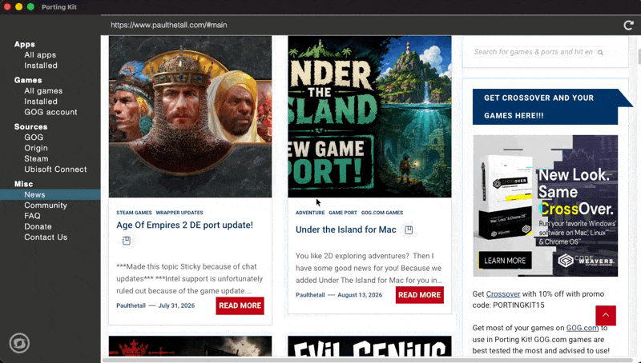
Porting Kit will show a Window, press Next on 'Port Installation', then press next on 'Port Installation Agreement'. On 'Select the Port Destination' (you can change the location of the installation of the bottle, I would recommend just leaving it as it is though). Press Install and WAIT for it to install...
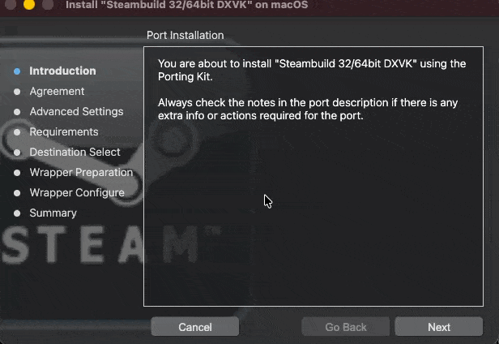
Wow
It's now installed!
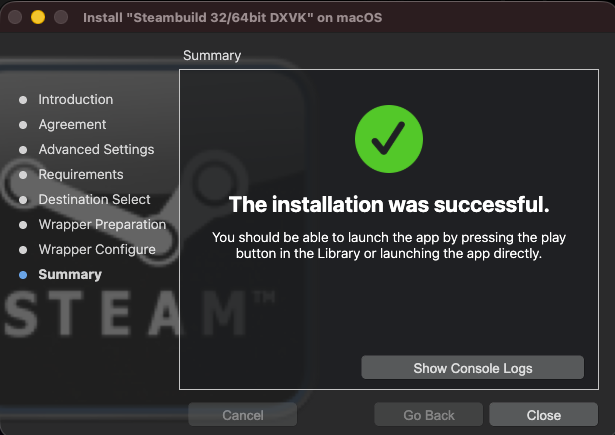
Now, press the 'PLAY' button to go through.
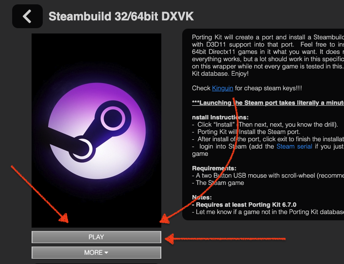
Doing this will bring a "Updating Steam" Window, let it scroll a bit, might take some time depending on your Internet Speed. After it's finished, It will close itself. After 30 seconds, if it doesn't relaunch Steam, simply press 'PLAY'.
Sign into your Steam Account with Deltarune on it.
After signing onto it, Download DELTARUNE. Either press the Cog/Manage button on the right or right Click on DELTARUNE, hover over 'Manage' then press 'Browse Local Files'.
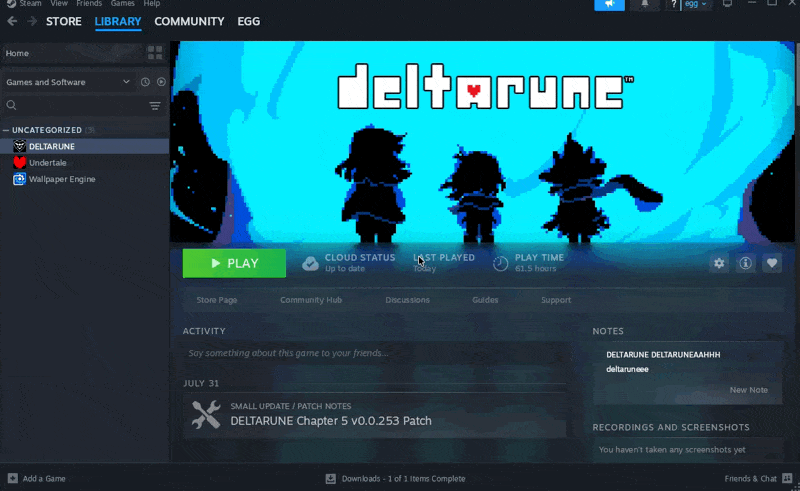
You'll then have a very OLD looking interface, in there, you should already see all the files you need to copy. These should be the files:
- chapter1_windows
- chapter2_windows
- chapter3_windows
- chapter4_windows
- chapter5_windows
- mus
- data.win
- DELTARUNE.exe
- options.ini
Drag your mouse across all of the files and right click and press Copy. On your left, press Desktop. Now this Desktop is also your actual MacOS Desktop, so make sure to go into your Desktop and create a folder. To make it better to know which is which, I will be naming my folder Win_Deltarune. Going back to the file explorer window, reload the page by pressing the Location bar and pressing enter, and go into your Win_Deltarune folder. Now right click and press paste to put all the DELTARUNE windows files in there. Even if it doesn't show it pasted there, it should be. Check your actual folder in Finder and you should see the files in your Win_Deltarune folder.
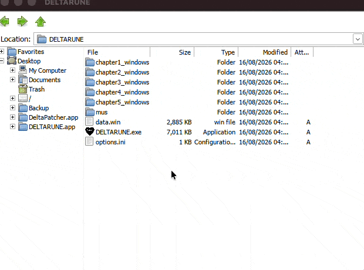
You can now completely exit out of the file explorer window and Steam. THOUGHH Steam might re-open automatically. If this happens, simply on Porting Kit and on the page for Steambuild, press 'More' and Force Close. If it opens again just do it 1 more time and it should close forever... hopefully.
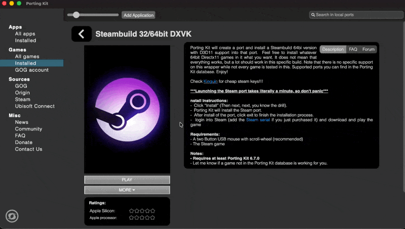
Step 02: Some Organisation
So, now we want to organise a bit i guess??? To easily access everything we need to.
In your Desktop, we will also need your MacOS version of DELTARUNE. Launch your native/MacOS version of Steam. Similarly to last time, right click on DELTARUNE, hover over Manage and press Browse Local Files. Copy the DELTARUNE app into Desktop or simply move it into there, either one works.
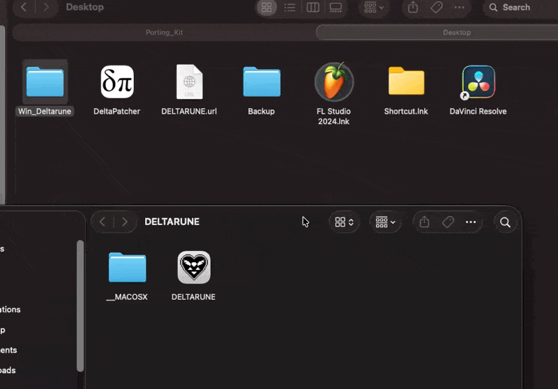
Step 03: Modding DELTARUNE
Now for the Modding part!!!
Now get your Mod of choice, for me, I'll be using the "60 FPS Overhaul" Mod. Now, the mod I have has a few files, for example my mod folder has these files:
- ch1_60fps.xdelta
- ch2_60fps.xdelta
- ch3_60fps.xdelta
- ch4_60fps.xdelta
- icon.png
- launcher_60fps.xdelta
- meta.json
- modding.xml
- README.txt
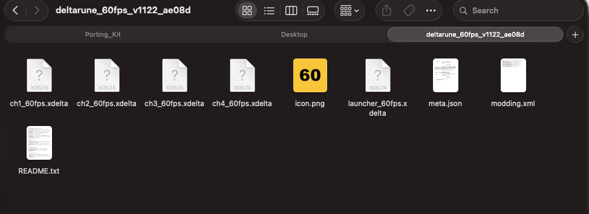
The only files that you will most likely need for your mod are the .xdelta files. For this tutorial, I'll only be patching Chapter 1 of DELTARUNE to have the 60fps Mod.
Make sure you've downloaded DeltaPatcher! As we're going to use it right now. But... just in case you can't use it or for some strange reason don't want to, HERE's an online version of it:
https://kotcrab.github.io/xdelta-wasm/
Open DeltaPatcher. You will see 2 slots to input. 'Original File' and 'Xdelta patch'.
'Original File' will be your data.win file from your Windows version of DELTARUNE
While 'Xdelta patch' will be your .xdelta file.
The data.win file for your mod will depend on what chapters your mod supports. For mine, I will be using the data.win file within chapter1_windows. You might be using a different one for your mod. But, just know that:
- data.win (in main folder) -> Deltarune launcher/menu
- chapter1_windows data.win -> Chapter 1
- chapter2_windows data.win -> Chapter 2
- chapter3_windows data.win -> Chapter 3
- chapter4_windows data.win -> Chapter 4
- chapter5_windows data.win -> Chapter 5
Warning!! Make sure to make a copy of the data.win file you're planning to patch with your mod, so you don't have to go back to doing all those steps to getting that data.win file back again!!!
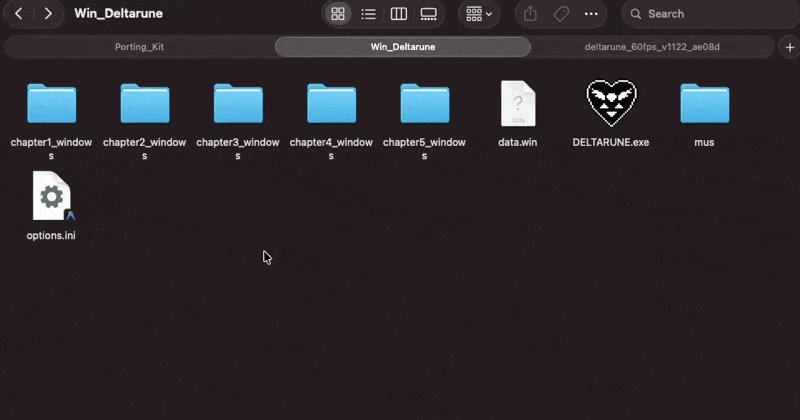
After putting my data.win file from chapter1_windows into 'Original file' and ch1_60fps.xdelta into 'Xdelta patch', I just need to press 'Apply Patch' and boom!!! Patched!! And now that data.win file should contain your lil mod!
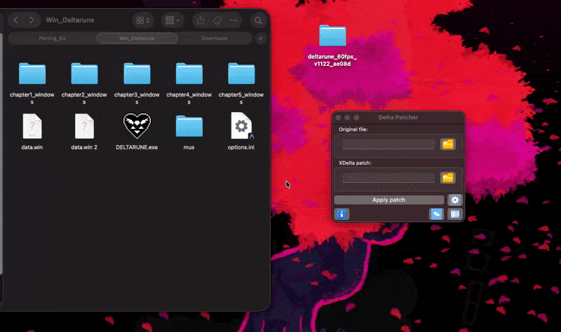
Now, go back to your Desktop and right click on the DELTARUNE app (MacOS version) and press 'Show Package Contents', press Contents, press Resources. This is your MacOS DELTARUNE games folder. Now, since I'm only adding a mod for chapter 1, I will go onto chapter1_mac. Find the game.ios file and rename it to anything else that isn't game.ios.
Bring your patched data.win file into the chapter you've patched your data.win for and rename data.win to game.ios. And..... YOU'RE COMPLETE!!!! well, if you've got multiple data.win files then of course just do that for all of them, rename all of them into game.ios and put them in their respective chapter.
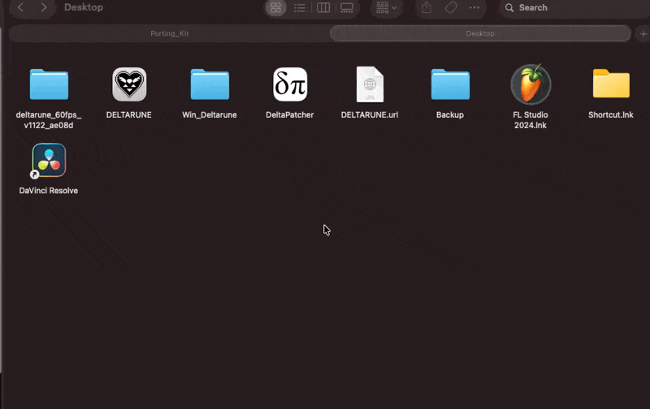
That is honestly all! Now enjoy your mod. Obviously this whole thingy is based off a video that i've already created, so go and give me a sub, if you need any assistance just comment on there, thats the quickest way to get me to respond XD
THOUGH, you might have some trouble or issues, just go on here and try to see if your issue is in here!
04. Troubleshooting
Fixing common issues and crash errors.
The Patch Could Not Be Applied
If this shows up, it most likely means you're either patching the INCORRECT data.win file, the data.win file is possibly patched already or you're using the wrong DELTARUNE version.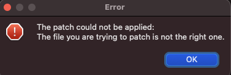
Some other reasons this can happen, just in case the above doesn't fix it:
- Your DELTARUNE probably got updated since the mod was made. xdelta patches only work on ONE exact version of data.win, so if Steam or Porting Kit auto updated the game after the mod came out, it will fail. Check the mod page for what version it actually needs.
- Sometimes it shows up as a totally different looking error too, something like "target window checksum mismatch" or XD3_INVALID_INPUT. If so, it's likely the same reason.
- If that data.win already has a different mod patched onto it, you'll need to redownload DELTARUNE to get an unpatched copy.
My Mod doesn't work...
If for some strange reason your mod doesn't work after following all these steps, you can try the last option of just using Porting Kit. No need for any game.ios files or anything. Go into Finder, and press CMD + SHIFT + G.
Paste '~/Applications/Steambuild 32 64bit DXVK.app' or go into that directory from your user.
Right click Steambuild and go into 'Show Package Contents', then Contents, drive_c, Program Files(x86), Steam, steamapps, common then last, DELTARUNE.
Now you can freely patch the data.win files right there, and after patching them try running DELTARUNE through Porting Kit!